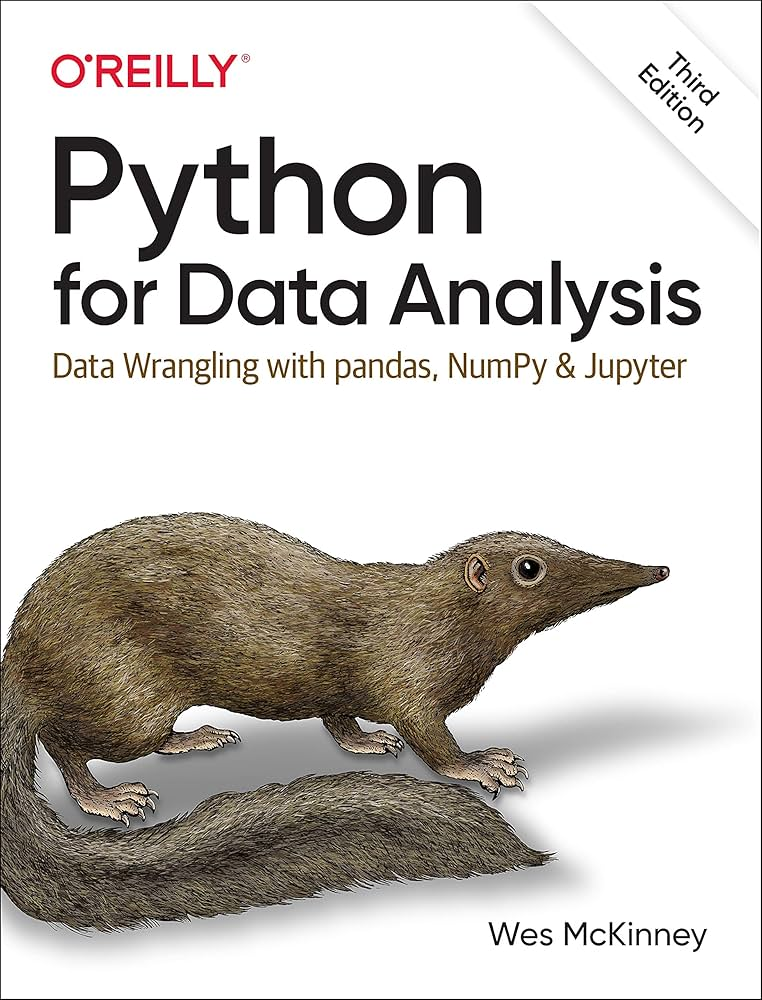
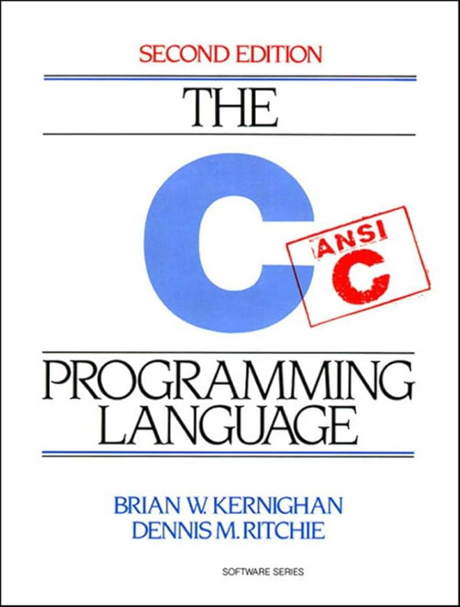
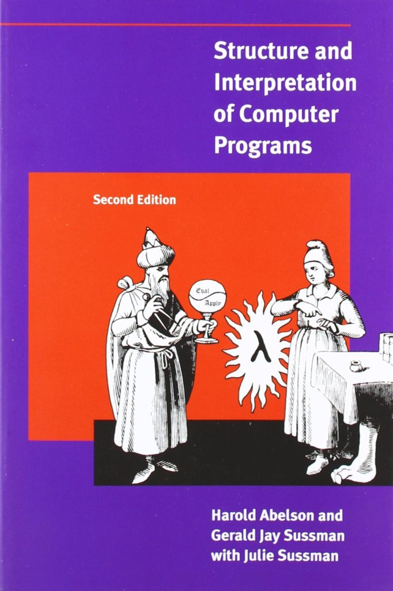
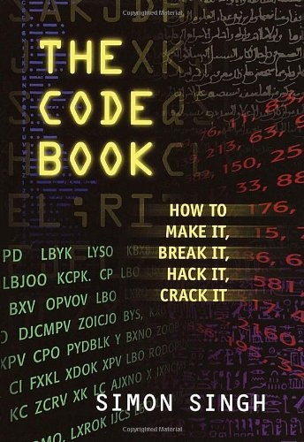
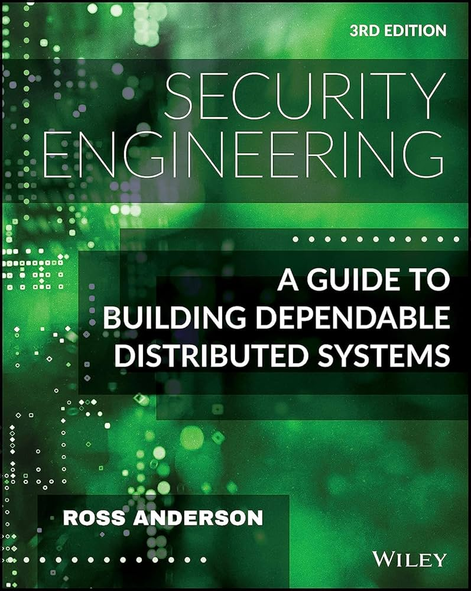
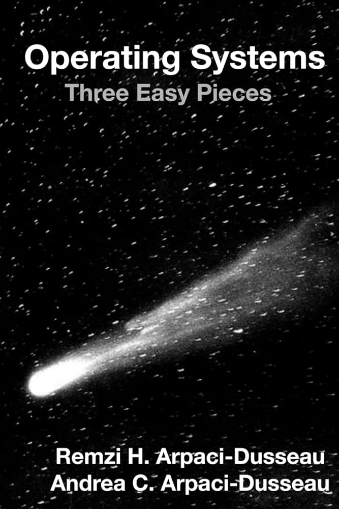
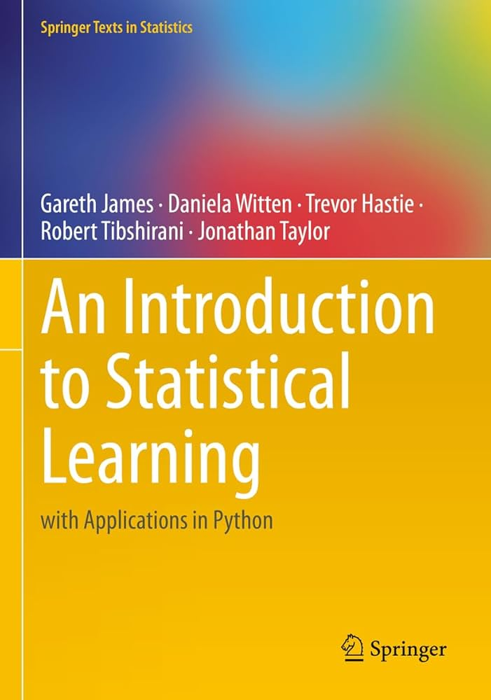

Study Challenge
Recently I challenged myself to study for one hour everyday for 100 days.
I got this idea because I have been wanting to learn more about data analysis, security, and C; I got some books on these topics, and I figured I would make a fun challenge out of going through them.
I stream the study sessions on Twitch or YouTube and upload the recordings to YouTube.
Books:

The book gives a sweeping overview of pandas and its core functionality. Wes begins by reviewing some core Python tools like functions, common data types, list comprehensions, lambdas, try-except blocks, etc. This section of the book can safely be skipped by users familiar with Python. Next, we are introduced to Numpy arrays and shown how they act as the building blocks for both DataFrames and Series, the primary data types for pandas. Around this time, Wes gives a memorable definition of the purpose of Numpy and pandas, stating that they "prioritize data processing without using for loops." After this, the meat of the book is presented, and readers are shown how to load, store, manipulate, and analyze data using pandas. The last few chapters discuss time series data, visualizations with matplotlib, and modeling techniques.
I approached this book with about a year's worth of experience with pandas, and this book showed me that I had only scratched the surface of the functionality offered by this library.

The first half of this book was really fun to read. I have had previous exposure to statically typed languages from Java, but I never learned the language deeply, and have spent most of my time with Python. With this being said, I learned about particular things I had taken for granted, being someone that uses Python a lot. For example:
1. Interactive Shells
I need to use pandas at work quite a bit, and doing so in the interactive shell has made my life a lot easier. It was very interesting working with a language that needed to be compiled after each change in order to run.
2. Extensive Documentation
Python and its popular libraries are documented very thoroughly. Other tools I use frequently like zsh and neovim are also very well documented. I was surprised by how C is maintained, and honestly I still don't understand how to find proper documentation. I found this website, but it doesn't seem to be official. Seeing that I have only been in the C ecosystem for a few weeks, I realize that this answer is ignorant, but I guess that is kind of the point. I was simply surprised to see the lack of a unified documentation.
With this being said, there are things I enjoy about C; just as I had taken some things for granted using Python, I also learned what I was missing out on by using Python.
1. Small Language
It is amazing to see how great a small language can be, and makes me wonder if some other languages, like Python, aren't loaded down with unnecessary fluff.
2. Static Typing
I like the straightforward and explicit mannerisms that come with a statically typed language.
3. Memory Management
I spent most of my time messing around with memory allocation and pointers while learning C. It was so much fun, and I couldn't believe that such intimacy with hardware was actually impossible in Python.
Concerning the structure and readability of the book itself, I think it is well understood that the material reads more like a reference manual than a book. I don't mean this in a negative way, it's just fact. The authors make it clear from the beginning that the book is intended to be concise, and in a lot of ways, that is refreshing. I would rather deal with a book that is less than 250 pages than one that is over a thousand.
It is clear that the authors have a background in mathematics. At times the presentation of the concepts can be confusing, but I would place that as a deficiency on my part.
Overall, I'm very glad to have read this!

This book is a monolith in computer science literature. It is clear that I will not derive everything of value in one pass alone; I foresee this book being one that I revisit time and time again throughout my life and career.
The authors have backgrounds in mathematics, and it shows in their presentation of material. While at times I would have preferred more practical explanations, the presentation style was a constant reminder of how mathematics in many ways built the field of computer science. Also, there is a heavy focus on the functional programming paradigm in the book. Their way of presenting functional programming and their way of showing how recursion is a hallmark of functional programming was very interesting.

An excellent introduction to cryptography and its history. Great discussion about the people, events, and ciphers that have shaped cryptography, especially in the 20th century. It is very interesting to think about how both cryptography and computers in general developed during WWII. Quite literally, the first programmable computer (Colossus Machine) was directly designed in efforts to decipher the Lorenz ciper of Nazi Germany. This was an all-around enjoyable read.

Bonus Books:

